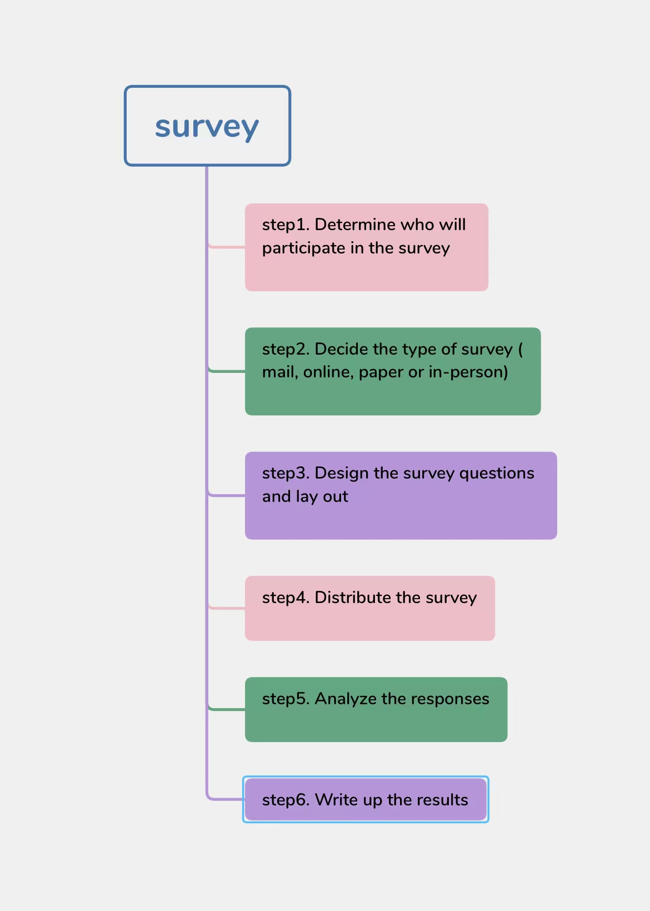

A complete survey process is as follow：
First of all, we need to determine who will participate in the survey;
Second, we need to decide the type of survey(mail,online,paper or in-person);
Third, we need to design the survey questions and lay out;
Step4 we need to distribute the survey;
Next, we need to analyze the responses;
Finally, we should write up the results.
There are all the process steps of the investigation.